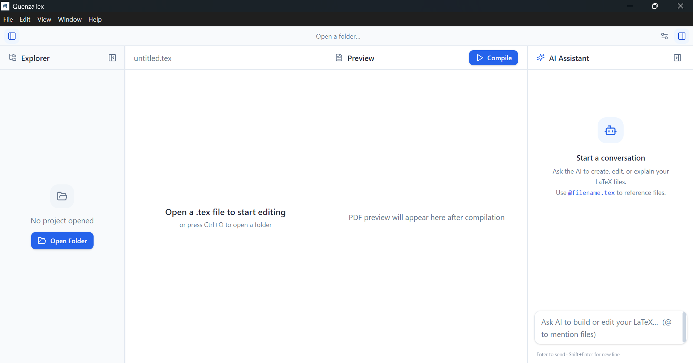
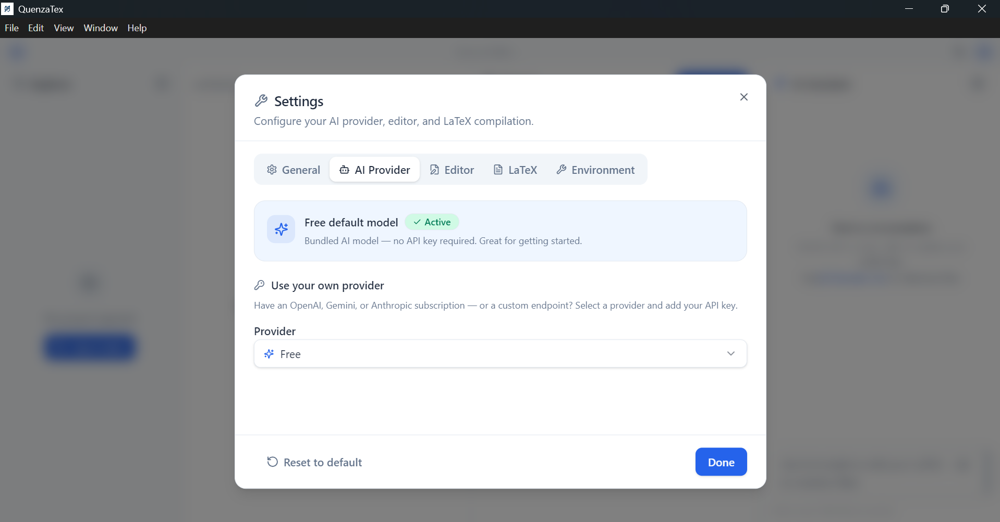

Just describe what you want — Quenzatex's native AI agent writes, edits, and compiles your
.tex files for you.
Like having Cursor and TeXstudio in one. Free forever.

A complete editor with an AI that actually does the work — not just autocomplete.
Type an idea like "create a document about Jakarta" or "fix the literature review in chapter 2" — the AI autonomously creates, edits, and deletes files in your project. Powered by opencode.
Compile with a click and see your PDF instantly. Scrollable, zoomable preview for both PDF and image files, powered by TeX Live & latexmk.
Start free with the bundled model — or plug in your own OpenAI, Google Gemini, Anthropic, or any custom OpenAI-compatible endpoint. Test the connection right in the app.
A Monaco-powered editor with a resizable four-panel layout — file explorer, editor, preview, and AI chat. Fast, clean, and built for real work.
Free by default, no account required. Already subscribed to OpenAI, Gemini, or Anthropic? Just paste your API key, pick a model, and verify the connection with one click.

Watch Quenzatex turn a plain request into a fully written, compiled LaTeX document.
Quenzatex is completely free and open source. No subscriptions, no paywalls, no lock-in. Read the code, file issues, suggest features, or contribute — everything lives on GitHub.